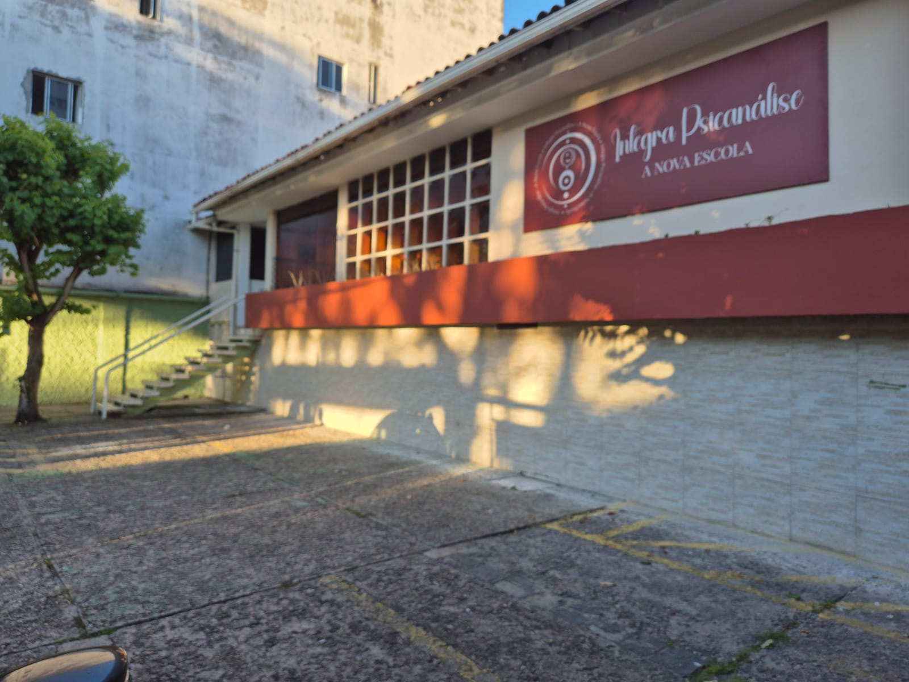

Aqui, a tradição encontra a inovação e o rigor acadêmico sem abdicar do diálogo com a sensibilidade humana. Assim, o conhecimento se transforma em prática. A Integra Psicanálise é pra quem deseja ser mais do que um profissional, é pra quem quer ser um agente de transformação.

A escola Integra abordagens complementares que geram demandas para Clínica psicanalitica freudiana, além de abranger conhecimentos e conteúdos sobre as sete escolas de psicanálise.
Nossa equipe é formada por psicanalistas e professores de excelência, comprometidos com uma formação ética, humanizada e clinicamente rigorosa.
pesquisas realizadas pelo corpo docente que você so encontra aqui!
módulos impressos com conteúdo atualizados atendendo demandas da Contemporâneidade
Disciplinas Inéditas para Psicanlistas Formados
2 anos e meio de jornada teórica, clínica e humana.
Desde sua origem até as suas implicações contemporâneas, com a visão ampla das diversas abordagens psicanalíticas para uma compreensão aprofundada da psicanálise
À interlocução com saberes como a neurociência e os estudos de transtornos de personalidade, além da discussão do autismo como uma quarta estrutura.
Manejo clínico para infância, adolescência, bebês, idosos e adultos em geral. Atendimento na clínica presencial e online, em análise pessoal ou em grupos de instituições e empresas.
Estudo da passagem ao ato e da vazão criativa, abordando também psicossomática, consciência corporal e fundamentos na hipnose clinica. O módulo inclui reflexões sobre terapêutica medicamentosa, impactos clínicos.
nterpretação dos sonhos e sexologia na psicanálise. Prevenção e autocuidado em saúde e como construir uma carreira como psicanalista.
"Cada aula é um mergulho repleto de descobertas. O acolhimento é fantástico. É aquele lugar que você fica torcendo para que chegue logo o dia da aula. 😍"
"A intriga psicanálise não é só uma escola, a instituição aborda a sete tipo de teoria e prática psicanalítica, a base é freudiana, a cada encontro me faz refletir a importância que amplia o eu e o outro em toda sua subjetividade tanto na análise pessoal, supervisão e estudo teórico. Tudo me leva a crê que é transformador 🙂"
"Conteúdo profundo e denso… Freud injetado em nossas veias da maneira mais linda. Professores capacitados, acolhimento e os coffees ☕🍰❤️"
Estamos crescendo pelo Nordeste e a próxima filial pode ser na sua cidade.Vote e nos ajude a decidir!
Sim. A formação em psicanálise é aberta a qualquer pessoa interessada que seja graduada em qualquer area do conhecimento.
Análise é a sessão realizada com Psicanalista e Terapia é mais abrangente, mais utilizado por Psicólogos e Terapeutas complementares em geral. Na Psicanálise existe uma técnica e uma ética única que se diferente das psicoterapias. Para ser analista não precisa ser Psicólogo. Na análise trata-se ali, além do sujeito, o sujeito do insconsciente, que não é prática nas psicoterapias.
Não, o Psicólogo tem em sua grade curricular no primeiro ano disciplinas de Psicanálise. Ele pode ser um Psicólogo que atende utilizando a abordagem da Psicanálise. É comum Psicólogos procurarem uma Formação em Psicanálise, através de um curso Livre, uma vez que tenham interesse em aprofundar-se na abordagem Freudiana. Assim, após a Formação em Psicanálise, através de um curso livre ele também será Psicanalista.
Tudo partiu do pai da Psicanálise, Sigmund Freud. Anos após a Psicologia vem acrescentando outras abordagens além da Psicanálise. O Psicanalista tem um foco na abordagem criada por Freud
Nossa carga horária é o dobro que a maioria dos cursos oferecidos para esta formação, porque prezamos pela prática, além do estudo teórico. E ainda que seja um processo de autoconhecimento enquanto capacita-se para atender na clínica com a abordagem da Psicanálise Freudiana. Dentro da carga horária do curso você conclui sua Formação e não poderá fazer estágios, supervisões ou entregar seu projeto de conclusão de curso após o período estipulado. Seu acompanhamento é singular até que possa finalizar a formação e começar a atuar.
A formação em psicanálise não é reconhecida pelo MEC, uma vez que a psicanálise no Brasil é considerada uma ocupação de formação livre. Historicamente, ela não é vinculada ao sistema universitário tradicional, mas sim a sociedades psicanalíticas que seguem o "tripé" fundamental: teoria, análise pessoal e supervisão.
Vagas limitadas por turma. Entre em contato agora pelo WhatsApp e garanta sua inscrição na Integra Psicanálise.
Informe-se para conhecer melhor a escola.